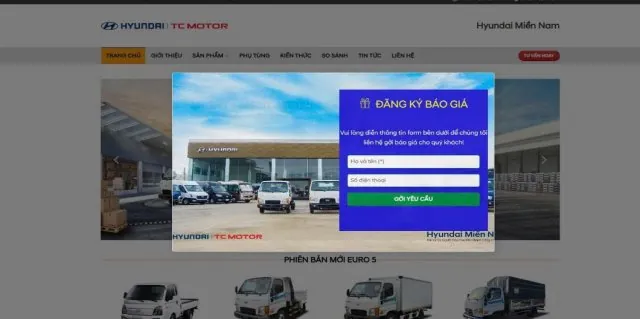

Những ghi chép rút ra từ quá trình học CNTT, làm dự án thực tế và đi thực tập tại doanh nghiệp
Danh sách bài viết

IT & Web
06/2026 6 phút đọc
9 tuần thực tập IT HelpDesk & Quản trị Web tại Hyundai Miền Nam
Những việc thực tế khi bước vào doanh nghiệp: chuẩn hóa quy trình HelpDesk 5 bước, chẩn đoán mạng LAN, quản trị WordPress hyundaimiennam.com và phối hợp cùng đội Marketing.
Xây dựng hệ thống Ticket & Bot Discord với Node.js cho cộng đồng 3.000+ thành viên
Quá trình chuyển từ hỗ trợ thủ công qua tin nhắn rời rạc sang hệ thống Ticket gọn gàng bằng discord.js v14, cách chia handler và giữ bot vận hành ổn định 24/7.
Những nguyên tắc giúp mã nguồn Node.js ổn định và dễ bảo trì hơn
Ghi chú về quản lý biến môi trường, xử lý lỗi bất đồng bộ, chạy tác vụ song song đúng lúc, kiểm soát rò rỉ listener và cách tách module rõ ràng theo trách nhiệm.
Thói quen làm việc giúp sinh viên CNTT đi đường dài với dự án thật
Từ cách đọc thông báo lỗi có hệ thống, giữ thói quen viết README dễ hiểu cho chính mình, đến cách tổ chức commit Git rõ ràng để dễ kiểm tra lại khi dự án phình to.
Bài học về lắng nghe và xử lý sự cố từ công việc CSKH ngành Game tại MOLA
Cách tách biệt cảm xúc người dùng khỏi nguyên nhân kỹ thuật, phản hồi minh bạch từng mốc xử lý và lý do nền tảng CSKH giúp mình xử lý ca IT HelpDesk bình tĩnh hơn.
Xây dựng nội dung ngắn & đọc chỉ số tăng trưởng tự nhiên trên TikTok
Góc nhìn dữ liệu khi vận hành nội dung số: tối ưu 3 giây đầu, theo dõi Retention Rate trên TikTok Analytics từ kênh cộng đồng @madaotz tới chiến dịch 3.4M+ views tại doanh nghiệp.